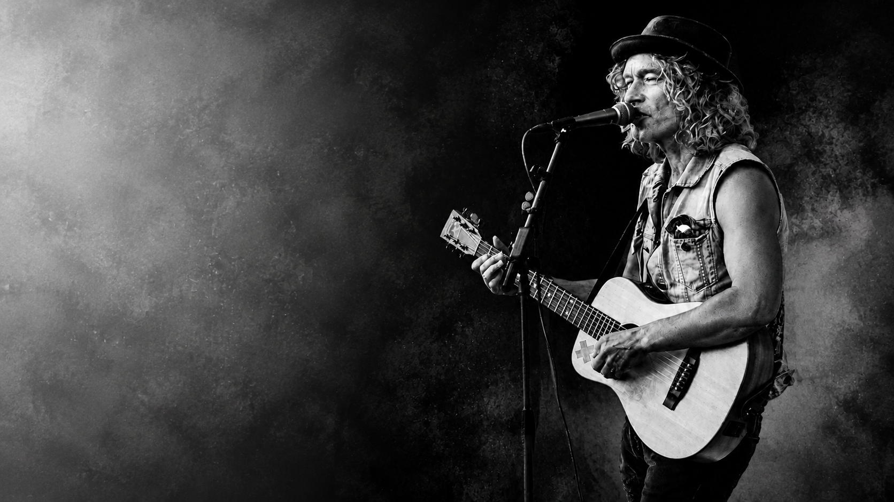
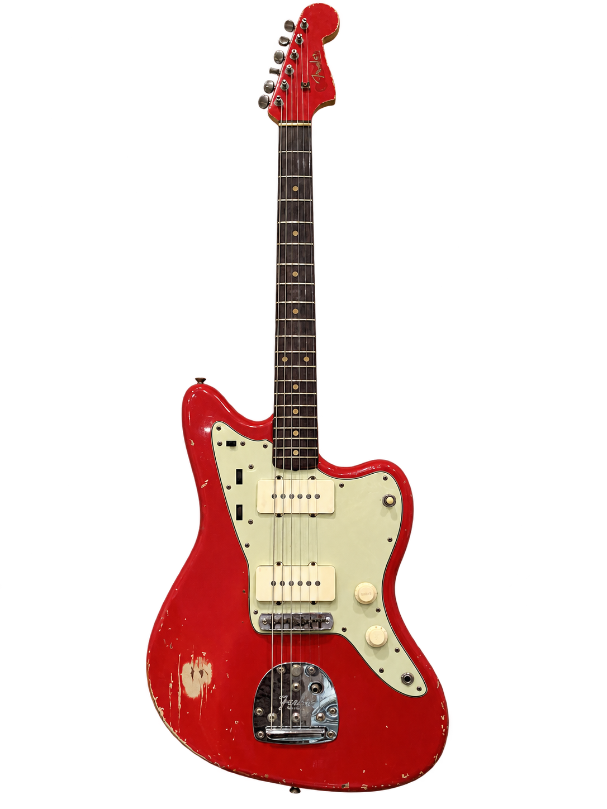
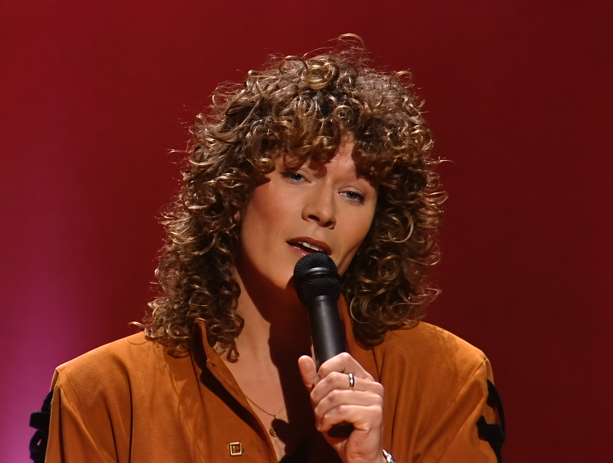
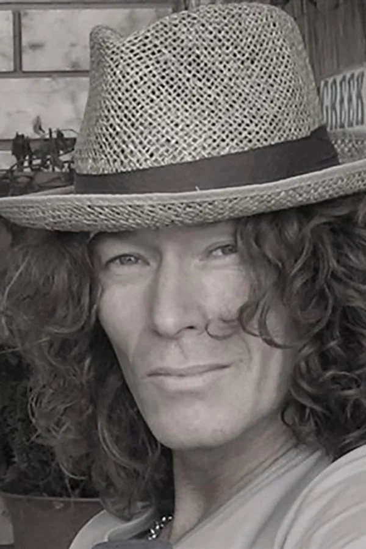
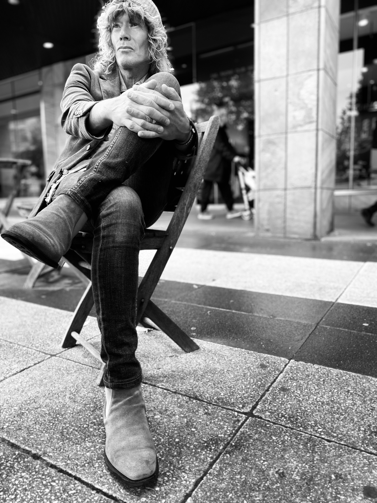

Livemusik med hjärta och närvaro
En kväll att minnas.
Musik som känns.
Med mångårig erfarenhet och en lyhörd känsla för stunden skapar jag livemusik som passar just er – från bröllopets första ton till festens sista extranummer.
Låt oss planera er kväll tillsammans ↗
En gitarr, en röst
och rätt känsla.
Mångårig erfarenhet. Ett professionellt genomförande. Underhållning på dina villkor.
Jag har lång erfarenhet av liveunderhållning och vet hur viktig rätt känsla är. Jag är lyhörd, professionell och väl förberedd, så att du kan känna dig trygg från första kontakten till sista låten.
Berätta vilken stämning du vill ha – jag tar underhållningen dit du vill.
Har du någon fundering, fråga mig ↗Ett minne från Melodifestivalen 1988
1988 tävlade jag och Karin Ljung med ”Säg är det sant?”, bidrag nummer 1. Årets vinnarlåt var Tommy Körbergs ”Stad i ljus”, nu en välkänd svensk klassiker.

Ett brett urval
Låtar för olika stunder.
Från välkända klassiker till låtar som får gästerna att sjunga med. Repertoaren anpassas efter ert tillfälle och önskemål.
Fråga om en låt ↗- Pop
- Rock
- Visa
- Country
- Schlager
- Svenska klassiker
- Dansband
- Akustiskt
- Soul
- Blues
- Folkrock
- Partyhits
Live – axplock från spelningar
Melodifestivalen 1988”Säg är det sant?”Se videon på YouTube ↗YouTube-videoLiveframträdandeBild och länk läggs till

YouTube-videoLiveframträdandeBild och länk läggs till
Eget material.
Olika tillfällen, anpassad musik med samma närvaro


Låt oss planera
KONTAKTlowe.flemstrom@gmail.com
När formuläret skickas öppnas ditt mejlprogram med uppgifterna ifyllda. Tryck på Skicka där.